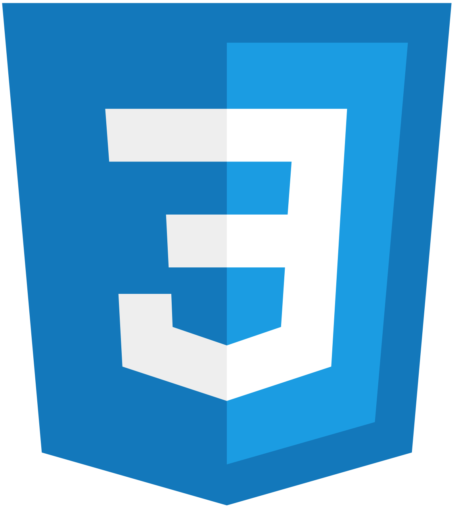
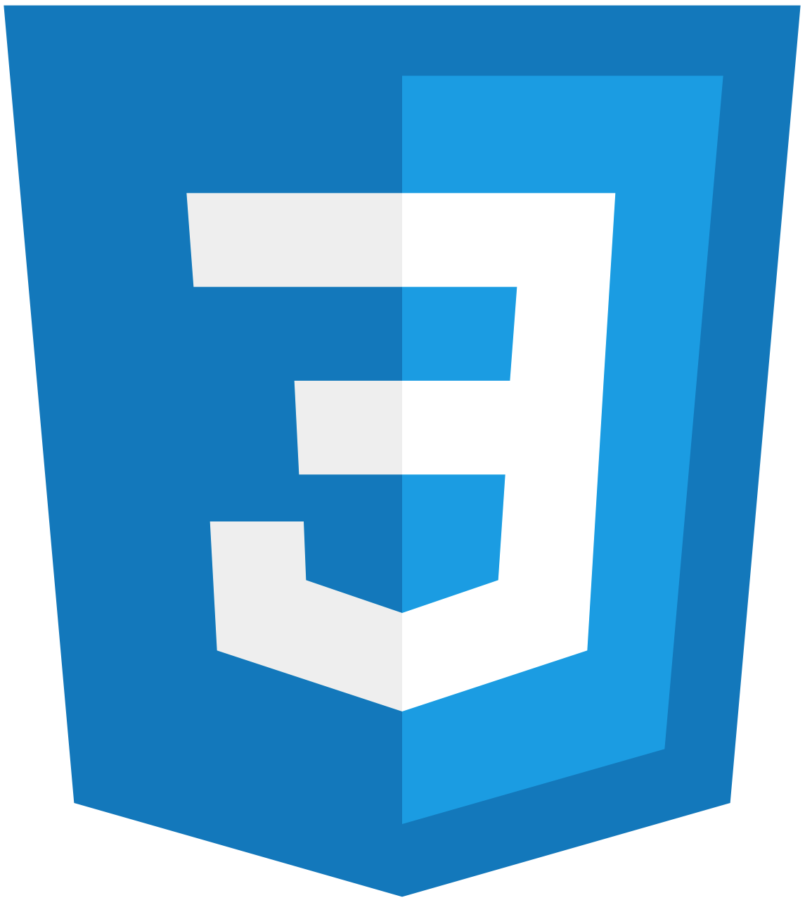

Tech Skills and Experince


 



I have completed a software development bootcamp at Northcoders over the past few months, a 14 week intensive course taught using Javascript split into a fundementals, backend, frontend and finally fullstack project phase to make me confident and work read. On this course I developed a keen inerest in React and Frontend development.


Attended University to study Computer Games Design and Development, giving me strong understanding of the theoretical side of Games Design and the skills to design and develop video games within a number of different frameworks and engines. While on this course I took part in game jams and completed several large scale assignments and projects.